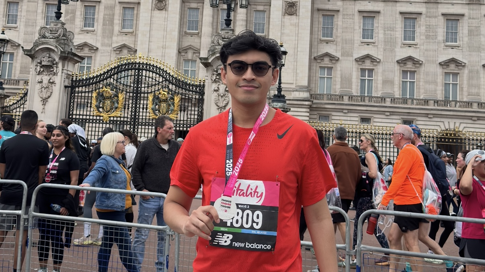
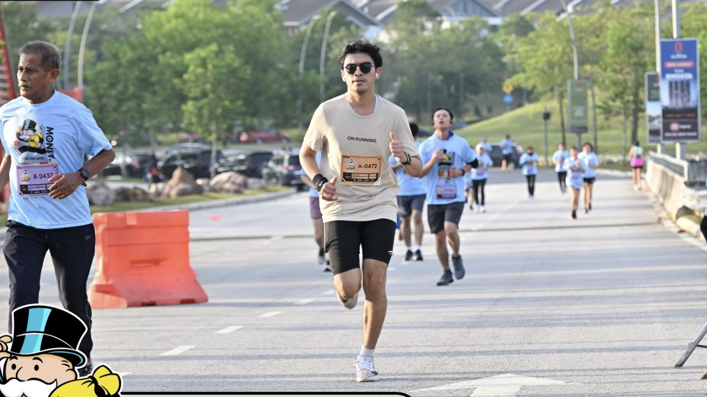

Vitality London 10000
Distance: 10km • Time: 49:20 • Pace: 4:54/km
London, United Kingdom

Distance: 10km • Time: 49:20 • Pace: 4:54/km
London, United Kingdom

Distance: 10km • Time: 46:56 • Pace: 4:42/km
Elmina, Kuala Lumpur

Distance: 21.1km • Time: 1:43:25 • Pace: 4:54/km
London, United Kingdom